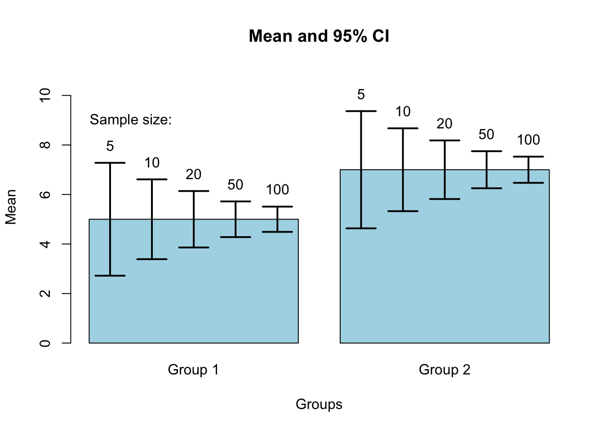
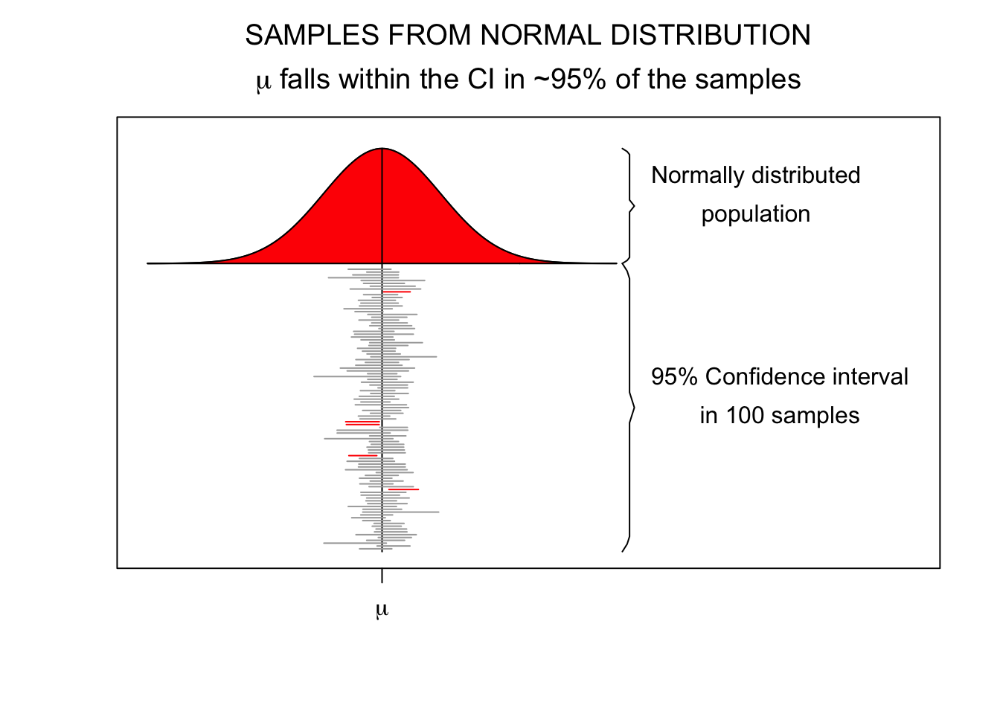

Alternatives to NHST
H0 and HA distribution
G*Power
Determine the required sample size for a desired test power, significance level, and effect size.
G*Power is a tool to compute statistical power analyses for many different \(t\) tests, \(F\) tests, \(\chi^2\) tests, \(z\) tests and some exact tests.

The problem with
P-values
There is no problem
The problem with P-values is that they are often misunderstood and misinterpreted. The P-value is the probability of observing a sample statistic as or more extreme as the one obtained, given that the null hypothesis is true. It is NOT the probability that the null hypothesis is true. The P-value is NOT a measure of the strength of the evidence against the null hypothesis.
The misinterpretation is the problem, and not adhering to the Nayman-Pearson paradigm
The dance of the P-value
Confidence Interval
Testing hypothesis with CI’s
Using confidence intervals to test hypotheses is a common practice in scientific research.
We can use this knowledge to test hypotheses. If the confidence interval does not contain the null hypothesis value, the null hypothesis can be rejected.
Note that this is not the same as our decision rule for NHST. In NHST, we compare the p-value to the alpha level. In the case of the confidence interval, we compare the confidence interval to the null hypothesis value.
Standard Error
95% confidence interval
\[SE = \frac{\text{Standard deviation}}{\text{Square root of sample size}} = \frac{s}{\sqrt{n}}\]
- Lowerbound = \(\bar{x} - 1.96 \times SE\)
- Upperbound = \(\bar{x} + 1.96 \times SE\)

Candy weight example
Candy weight example
Plot CI

5 out of 100 samples

Common Misinterpretations
Confidence intervals and levels are frequently misunderstood, and published studies have shown that even professional scientists often misinterpret them (Wikipedia, 2024)
Hoekstra, Morey, Rouder, & Wagenmakers (2014) administerred the following questionair to 120 researchers.

All of the statements are false
Researcher don’t know
| #True | First-Year Students (n = 442) | Master Students (n = 34) | Researchers (n = 118) |
|---|---|---|---|
| 0 | 2% | 0% | 3% |
| 1 | 6% | 24% | 9% |
| 2 | 14% | 18% | 14% |
| 3 | 26% | 15% | 25% |
| 4 | 30% | 12% | 22% |
| 5 | 15% | 21% | 16% |
| 6 | 7% | 12% | 11% |
Conclusion
Use both NHST and confidence intervals
Example

We also studied the validity by comparing the mean ability ratings of children in different grades. We expected a positive relation between grade and ability. Figure 5 shows the average ability rating for each grade and domain. As expected, children in older age groups had a higher rating than children in younger age groups. In all four domains, there is an overall significant effect of grade: addition \(F(5,1456)=1091.4,p<.01,\omega^2=.78\), subtraction \(F(5,1363)=780.5,p<.01,\omega^2=.74\), multiplication \(F(5,1215)=409.6,p<.01,\omega^2=.62\), and \(F(5,973)=223.31,p<.01,\omega^2=.53\) for division. Levene’s tests show differences in variances for the domains multiplication and division. However, the non-parametric Kruskal-Wallis tests also show significant differences for these domains: \(\chi^2(5)=753.28,p<.01\) for multiplication and \(\chi^2(5)=505.17,p<.01\) for division. For all domains, post hoc analyses show significant differences between all grades, except for the differences between grades five and six (Klinkenberg, Straatemeier, & van der Maas, 2011).
End
Contact